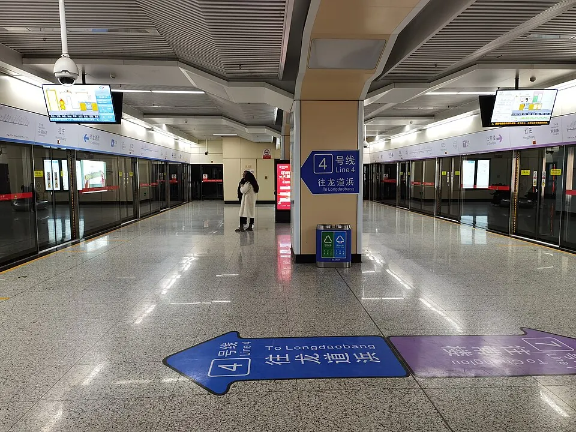
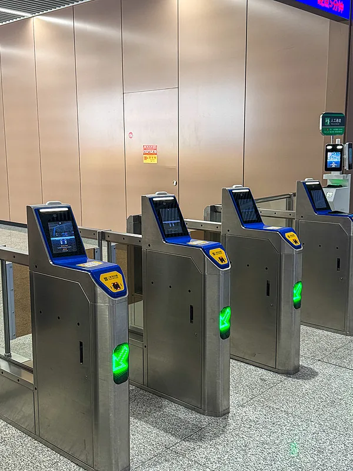
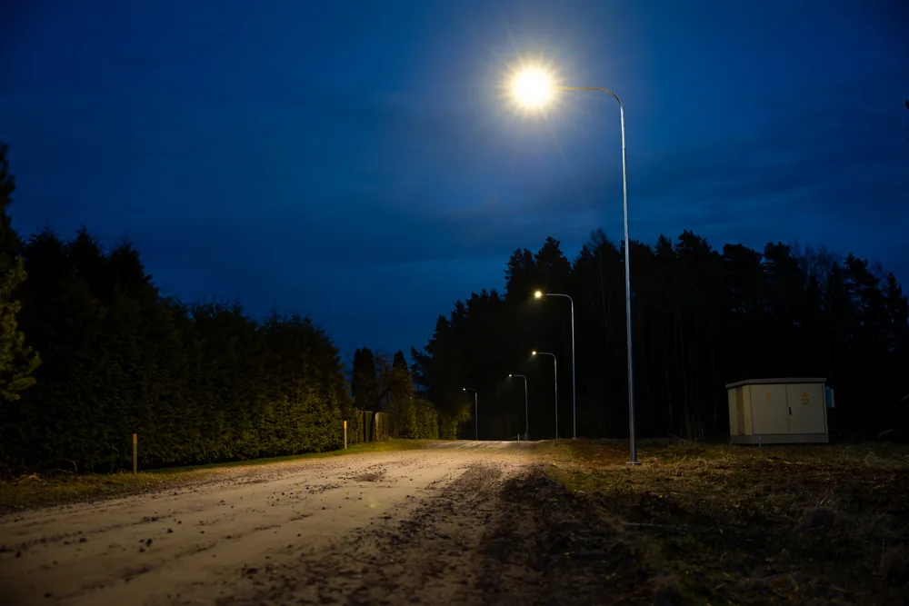

还有
四程路
高铁检票、邯郸东拼车、太行山路、村口夜路。
每一程，都有它自己的麻烦。



拼车邯郸东
摆渡车山路
玩法 四程四种玩法：检票、认车、稳住行李、夜路躲狗。每程 3 格体力，失败重走本程。
目标 从邯郸东站一路折腾到村口，别排错闸机、别被宰、别翻车、别被狗追上。
高铁检票、邯郸东拼车、太行山路、村口夜路。
每一程，都有它自己的麻烦。



玩法 四程四种玩法：检票、认车、稳住行李、夜路躲狗。每程 3 格体力，失败重走本程。
目标 从邯郸东站一路折腾到村口，别排错闸机、别被宰、别翻车、别被狗追上。